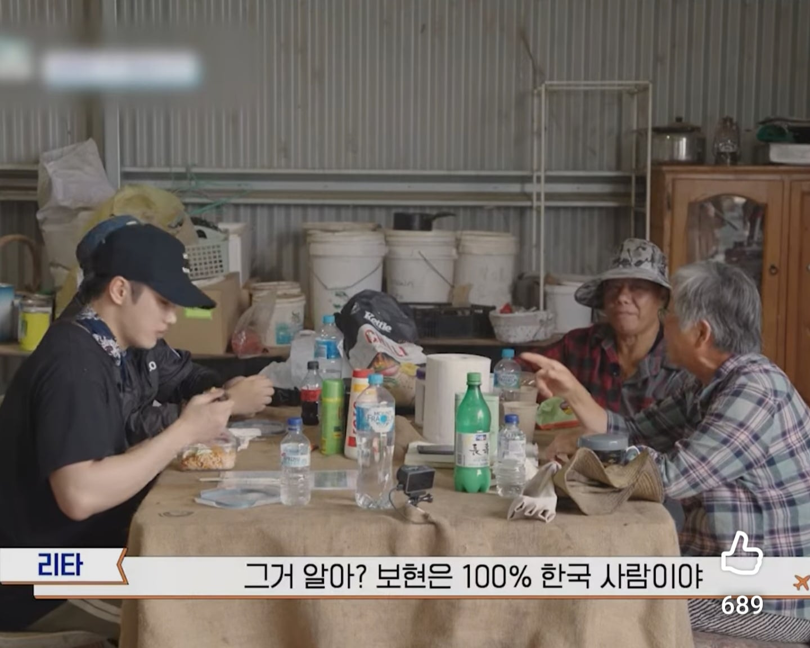
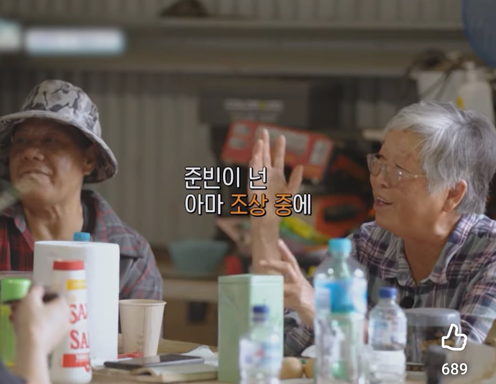
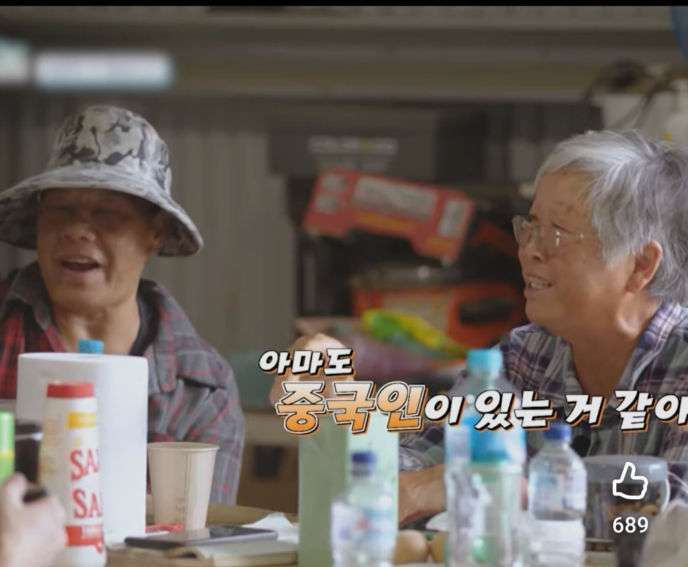
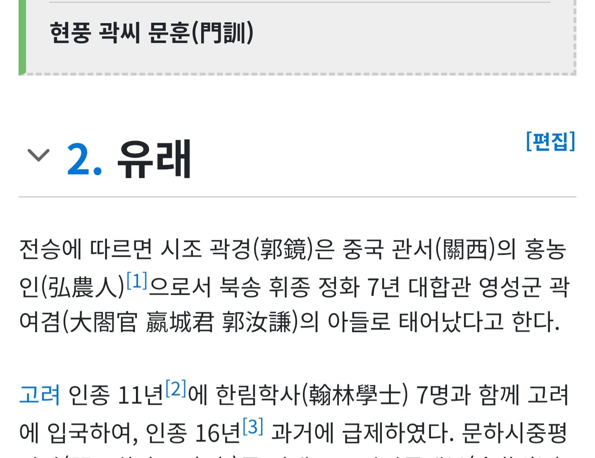
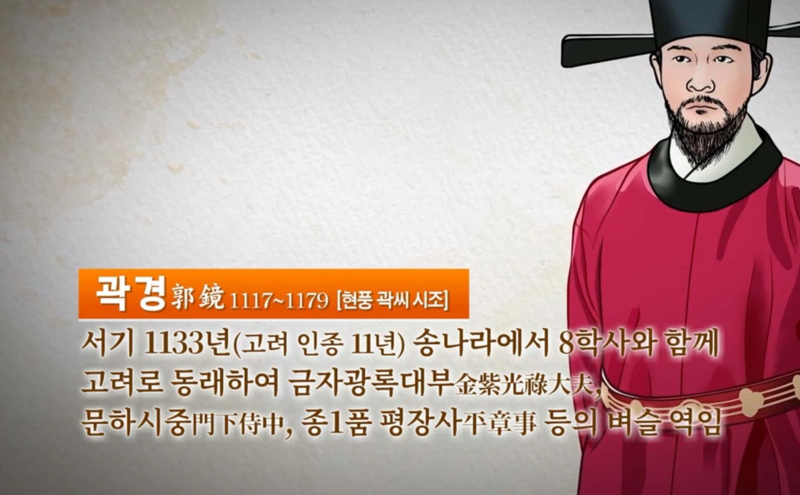

그야 시조가 중국에서 왔으니까 ㅋㅋㅋ
유전자가 이렇게 무섭습니다





그야 시조가 중국에서 왔으니까 ㅋㅋㅋ
유전자가 이렇게 무섭습니다
아 곽이 그래서 우정잉과의 썸띵이
ㅋㅋㄱㅋㄱ 나쁜놈ㅋㅋㄲㄱㄲ
곽준빈 놓쳐서 힘들텐데 그만 파묘해라
곽가의 후예인가
중국계 드립넷
못생겨서 아님?
사실적시
못생긴건 아니고 중국인 스테리오 타입처럼 생긴것이지 캡틴따거도 못생긴건 아닌데 그렇고
못생긴건 아니고???
대체 평소에 뭘 보고 사시는겁니까
사람한테 대놓고 못생겼다 하면 상처 받음
그래서 그냥 중국인처럼 생겼네요 하는거
개드립에서 대놓고 못생겼다하는게 디폴트 아닌가?
흑어공주도 그렇고 젠데이야도
곽튜브도
실제 생활서 마주치는 사람도 아니고
못생긴게 말대꾸 하지마
ㅈㄴ 잘생김
그냥 못생긴기 아니고 중국인처럼 못생김
찔린 개붕이들 발작한다구..!!
중국계 성이 엄청 많지
하지만 성을 밝히기도 전에
저렇게 따지면 중국 유전자 안섞인 한국인이 어딨냐
너무 진지해지지 말자
뭐래
심하게 섞였다 차이 아님?
유전자 혈통검사에서도 비율 있잖음
그거 의미없음 한국인 아무나 데려다 유전자검사시켜도 중국인일본인비율은 무조건나오게되어있음
다 나오긴 하는데 비율이 달라서 얼굴형이 좀 다른거같던데
일본으로 치우쳤거나 중국으로 치우친 비율
말도안되는소리임...
외모에 강하게 발현되냐 아니냐 차이지
시벌 죄다 아프리카 출신 아닌교~?
뭐 옛날사람들 시조로 중국인삼는건 일종의 브랜딩이라고 봐야지
경주김씨들도 신라시대때부터 흉노족출신 김일제를 한자같다고 자기들조상이라고 한거보면 그냥 몇천년간 반복된 사람의 습성임...
우리나라 양반이라하는 가문중에 중국에서 시조가왓다는 가문은 존나게 흔하다.
뭐 거의 대부분이지 뭐
곽씨 중국에서 넘어온거 맞음
근데 생각보다 다양한 얼굴이 있던데
중국계도 미남 미녀는 많음. 연예인에도 화교나 중국계도 많잖아.
그냥...... 거울 보고 자기 얼굴에 한숨 나와도 참고들 살아라, 조상님이 물려준 유전자 조합에서 너네가 나온거야.
나도 시조는 중국인임
곽튜브 처럼 생김?
성이 중국 유래라 해서 중국 피가 섞였다곤 할수 없는 게
그냥 성만 빌려쓴 게 많음 덩달아 시조도 같이 빌려온 셈이고
그땐 중국이 양반님들의 마음의 고향 같은데라
우리나라 족보는 믿을 게 못 돼..
그리고 개나소나 다 중국에서 왔다고 브랜딩했는데 뭘..
그냥 못생겼다고 말하소 ㅠ
일본사람같이 생겼다는건 무슨욕인거냐
근데 조선초기 양반퍼센테이지 생각하면 결국 조선후기에 다 족보사서 양반가니 뭐니 조상찾는 사람들이라
대부분 족보 산 혈통모르는 혈통들이 태반아니냐 ㅋㅋㅋㅋㅋㅋㅋㅋㅋㅋㅋㅋㅋㅋㅋㅋㅋㅋㅋㅋㅋㅋ
고려때 시조면 천년전인데 한국사람해줘라
성이 우씨도 저때 같이옴